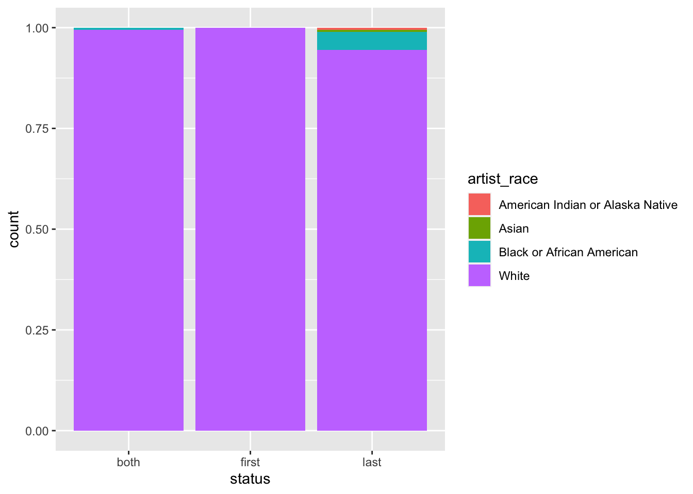
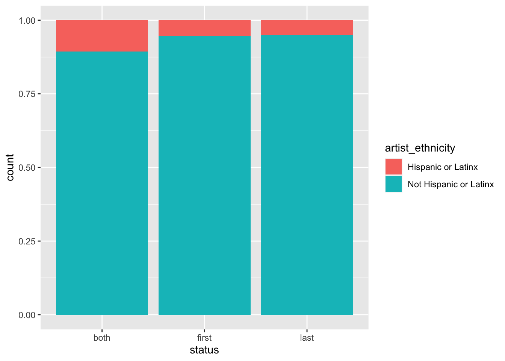
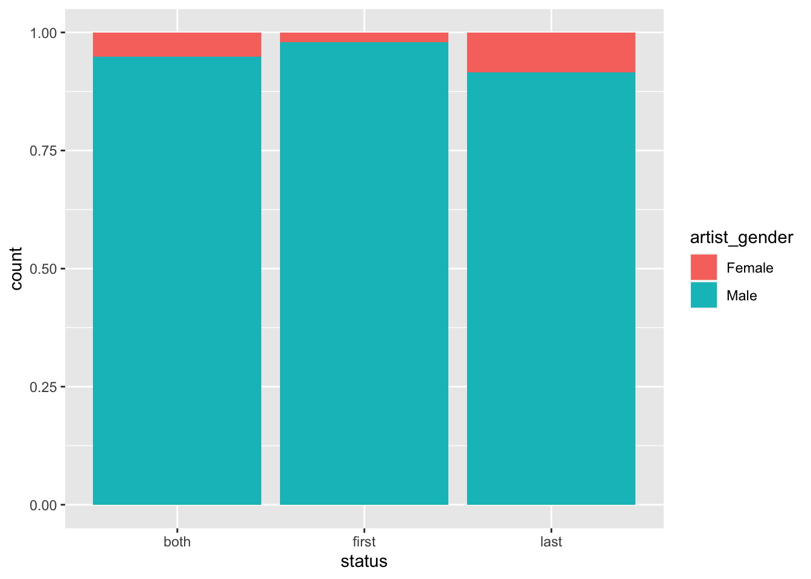

Art History
The Data
The data this week comes from the arthistory data package
This dataset contains data that was used for Holland Stam’s thesis work, titled Quantifying art historical narratives. The data was collected to assess the demographic representation of artists through editions of Janson’s History of Art and Gardner’s Art Through the Ages, two of the most popular art history textbooks used in the American education system. In this package specifically, both artist-level and work-level data was collected along with variables regarding the artists’ demographics and numeric metrics for describing how much space they or their work took up in each edition of each textbook.
Lemus S, Stam H (2022). arthistory: Art History Textbook Data. https://github.com/saralemus7/arthistory, https://saralemus7.github.io/arthistory/.
Editions
# A tibble: 9 × 2
edition_number `n()`
<dbl> <int>
1 1 103
2 1.1 119
3 2 136
4 3 190
5 4 204
6 5 242
7 6 246
8 7 206
9 8 188# A tibble: 3 × 5
status `mean(artist_race == "White")` mean(artist_gender == "F…¹ mean(…² `n()`
<chr> <dbl> <dbl> <dbl> <int>
1 both 0.995 0.0519 0.894 1773
2 first 1 0.0203 0.946 148
3 last 0.945 0.0848 0.950 401
# … with abbreviated variable names ¹`mean(artist_gender == "Female")`,
# ²`mean(artist_ethnicity == "Not Hispanic or Latinx")`I’ve broken the art pieces down into two groups: those pieces that show up in the first half of the editions (editions 1 through 4) and those that show up in the second half of the editions (editions 5 through 8). Then, each piece is labeled as showing up in the first set and the second set (“both”), in the first set and not the second set (“first”), or in the second set but not in the first set (“last”).
In terms of the updated editions, it seems as though the author has diversified the book by adding artists who are more diverse with respect to race and gender. Interestingly, the ethnicity seems more diverse in the seminal works that exist in both the first and last sets of editions.



[1] "You are slick!"